Computer Vision Using Transformers
Topics Covered
- Core concepts of
Attention is all you need - Adapting Attention to vision
- Use case Implementation
Attention is all you need
Why a new architecture is required?
- RNNs process words sequentially
- RNN cannot consider long sequence lengths
Attention Transformer Architecture
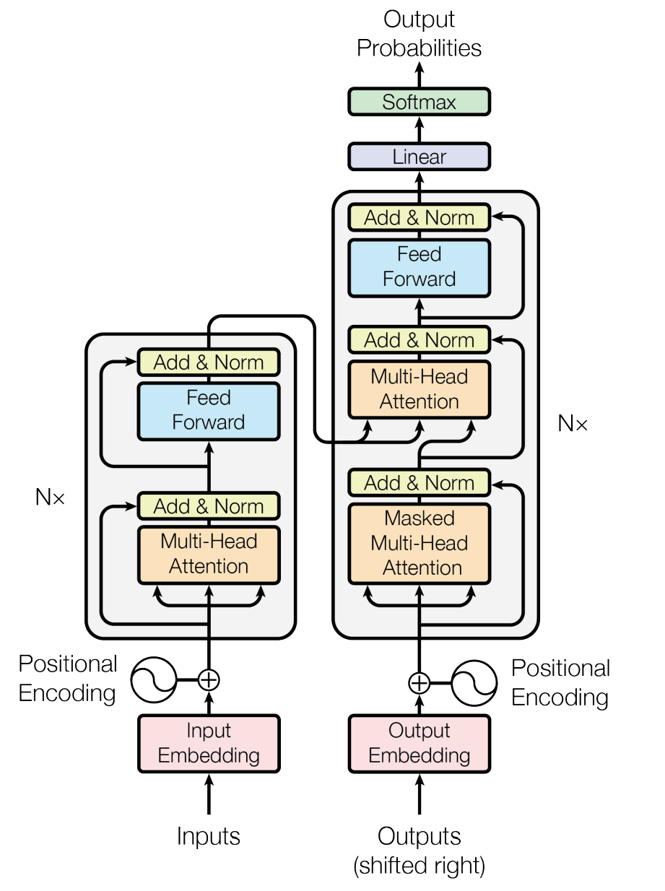
Blocks of the Architecture
- Embedding layer
- Reduce the dimension of word tokens
- Projection to latent space
- Positional Encoding
- To track the relative position of the words
Self Attention
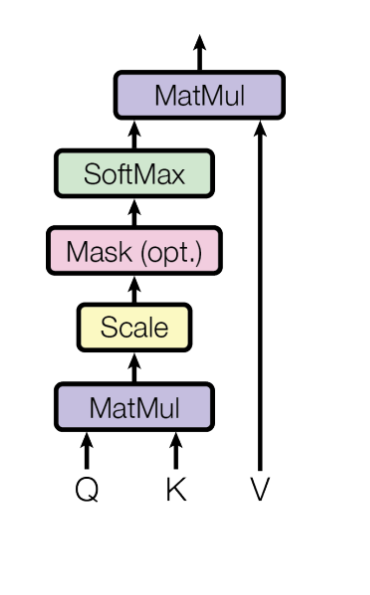
Self Attention
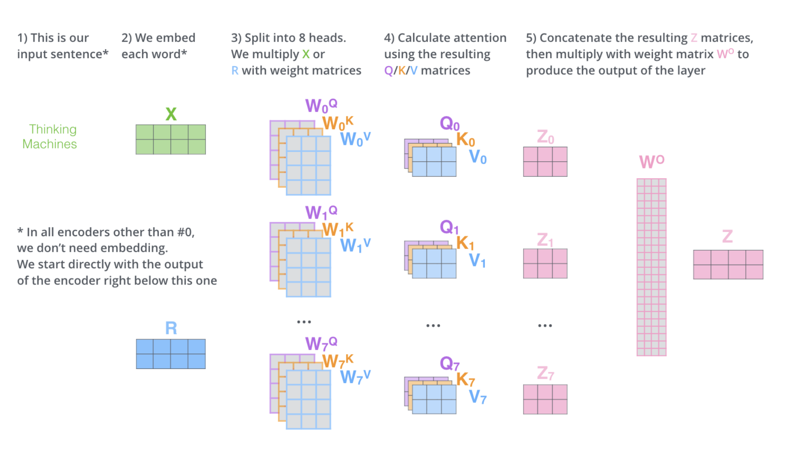
Self Attention
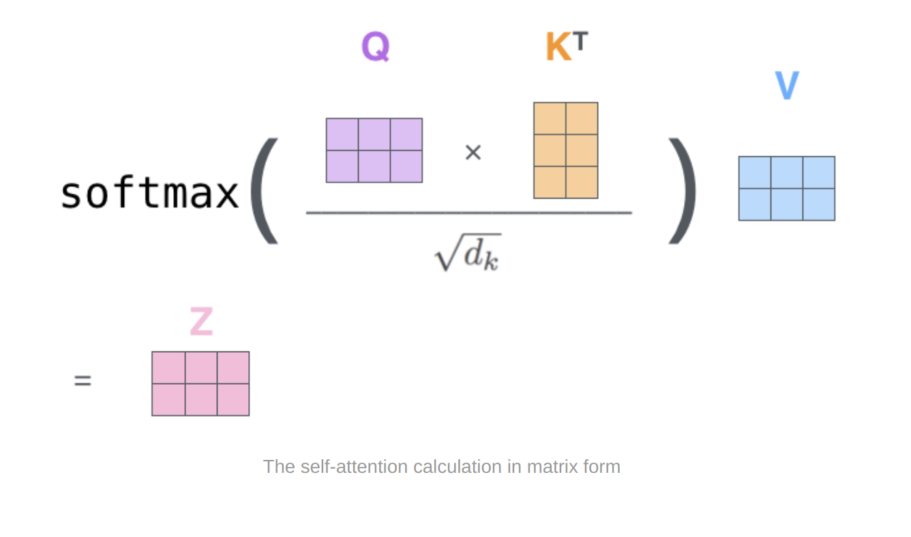
Why Multi-Head Attention
- It expands the models ability to focus on different positions
- It gives the attention layer multiple “representation subspaces”
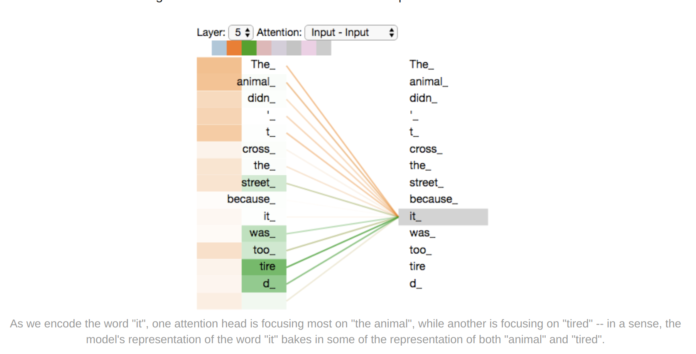
Importance of Attention
- Encoder providing a context to the decoder query by providing keys and values
- Each position in the encoder can attend to all positions in the previous layer of encoder
- Each position in decoder attending to all positions in the decoder
Skip connections
- Skip connection help a word to pay attention to its own position
- Keep the gradients smooth

Steps in Decoder
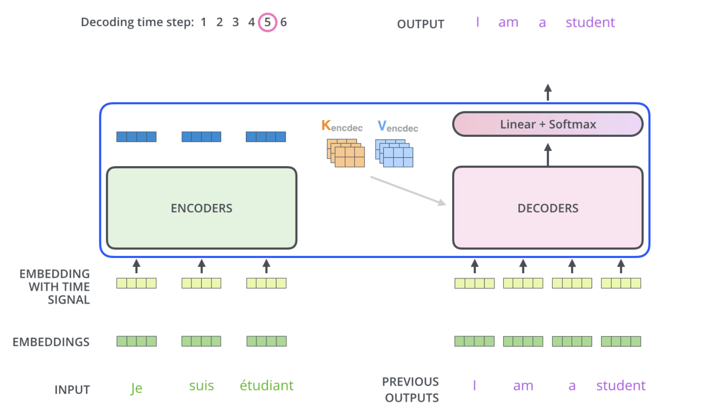
Adapting Attention to Vision
Vision Transformer
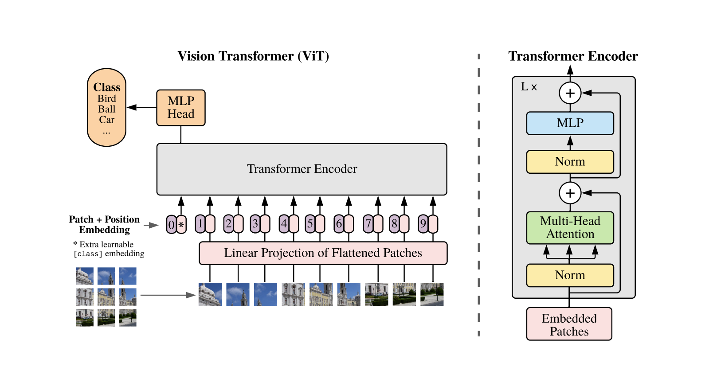
ViT Vs CNN
- Inductive Bias and Locality Vs Global
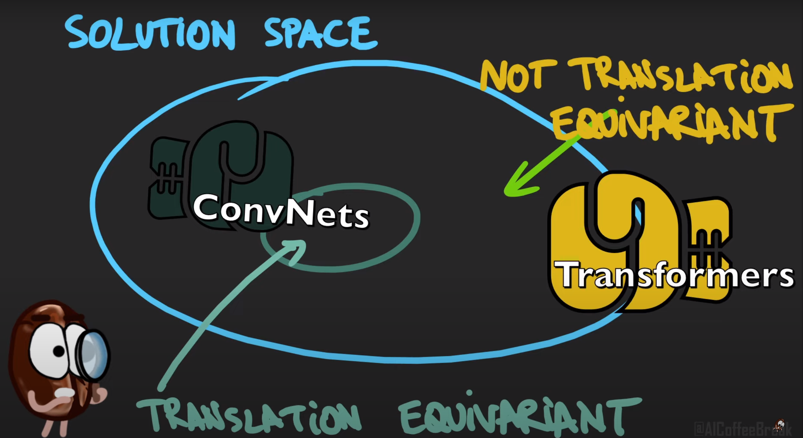
ViT Vs CNN
- Inductive Bias and Locality Vs Global
- Flexibility
- CNN works with less amount of data than ViT
- Specifically, if ViT is trained on datasets with more than 14M (at least) images it can approach or beat state-of-the-art CNNs.
ViT Vs CNN
- Transformer models are more memory efficient than ResNet models
- ViT are prone to over-fitting due to their flexibility
- Transformers can learn meaningful information even in the lowest layers
ViT Vs CNN
ViT reaches 84.86% top-1 accuracy on ImageNet with only 10 examples per class.- ViT is suitable for Transfer learning
- ViTs are robust against data corruptions, image occlusions and adversarial attacks
Hybrid Architectures
- CNN is used to extract features
- The extracted features are used by the transformers
Use Case Discussion
Problem Statement
- Monitoring when the children are in danger of leaving the front yard
- Predict when childrean are about to leave the yard to trigger the alarm
- We have videos of children playing sports
Considerations
- Collect and train the model on low quality images
- Amount of data available
- Training time available
- Importance of Interpretability
- Deployment requirements
- latency
- Model size
- Inference cost
Approach
- Object Detection
- Train a ML model on the object detection output
Object Detection with DETR
- DEtection TRansformer(DETR) 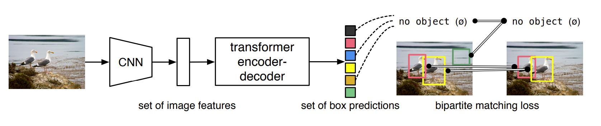
Object Detection with DETR
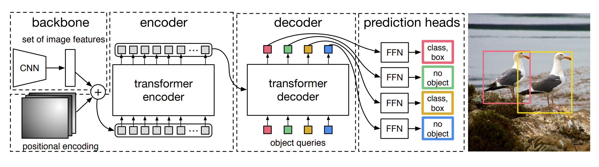
Object Detection with DETR
Object Detection with DETR
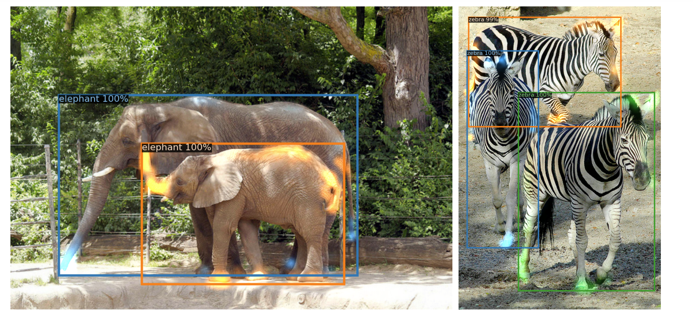
Why DETR
- Hand-crafted anchors not required
- They don’t require customized layers
- Predict all objects at once
- Post-processing not required for predicting bounding boxes
- Attention maps can be used for Interpretation
Why DETR
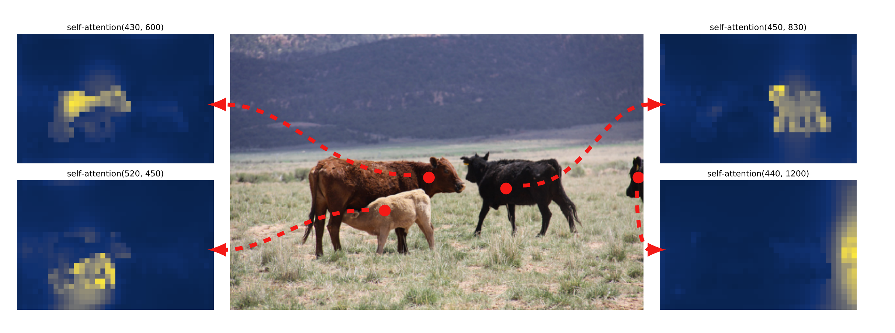
Why DETR
- What if object detection model doesn’t work?
- A segmentation head can be trained on top of a pre-trained DETR
Why DETR
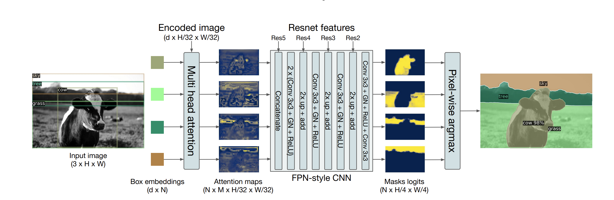
Why DETR
Why DETR
- We can get the FPS for processing videos
- Pre-trained Pytorch models and code available
Data Collection
- Brainstorming how data needs to be annotated
- Standardizing the definitions
- Collecting Diversified data - Different yards, balls, walls, seasons etc
- Labeling the data - Quality Vs Quantity
- Discussing ambigious cases with labelers and keep improving
Modelling
Using a pre-trained model is both more cost-efficient and leads to better results
How to select a pre-trained model
- Spot check all the available pre-trained models (expensive)
- Select a single pre-trained model based on
- Amount of data used for training
- Varied upstream data
- Best upstream validation performance
Cheaper strategy works equally well as the more expensive strategy in the majority of scenarios- How to train your ViT - Research paper
Validation
- False alarms are better than not raising alarm when necessary
- Recall is more important in this case
- Too many false alarms will reduce the customer satisfaction
- Improve Recall while maintaining Precision at an acceptable level
Validation
- FPS
- mAP for object detection
- Recall, Precision and F1 for the classification
Deployment
- Frame sampling instead of predicting on all frames?
- Deployment using platforms like Ray for effective GPU utilization
- Deployment at Edge to meet latency requirements - TensorRT
- Use AB testing framework to deploy new models
Continual Learning
- Continual learning suits deep learning models
- Incentivize customers to label the data in real time
- Update the model parameters in real time
- Continously monitor the model performance
Tool Suggestion for Monitoring
- Fiftyone
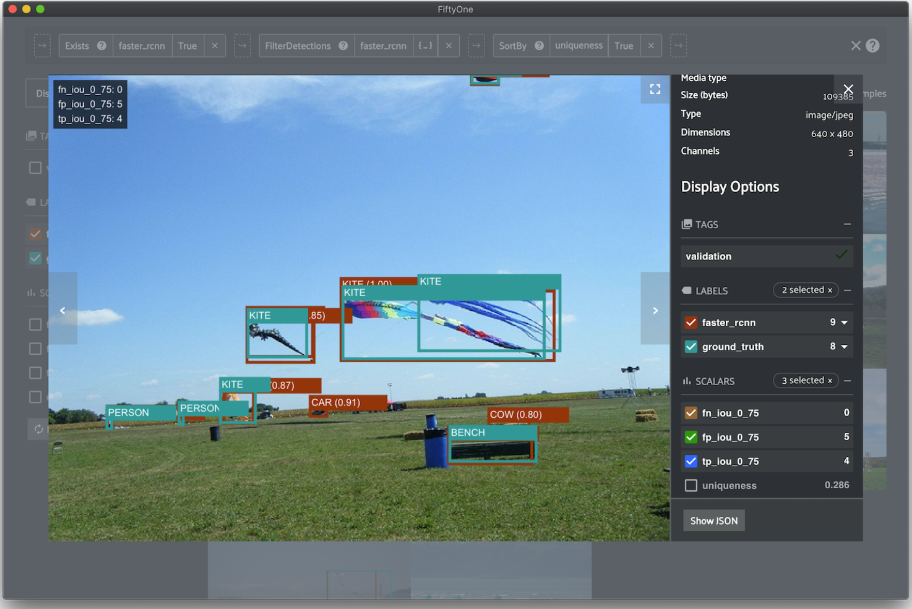
Summary
- Start simple
- Small improvements on regular basis
- Lookout for new discovery in the field
- Get Feedback, Iterate, Improve
- Keep the cycle going